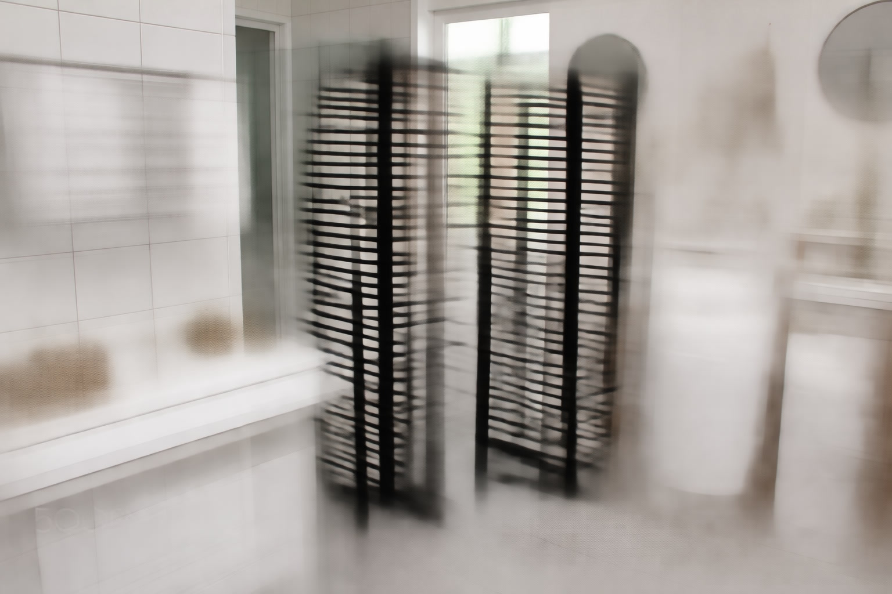

Towel Warmer Buying Guide: Types, Sizes & Installation (2026)

Bathroom Products Expert • 10+ years research

Quick Answer
Choose wall-mounted electric for permanent installations that double as bathroom heaters. Pick freestanding racks if you rent or want portability. Go with bucket-style for the fastest heating at the lowest price. Budget $50-$300 depending on type and features.
Table of Contents
Types of Towel Warmers: Which One Is Right for You?
The towel warmer market offers three distinct categories, each with unique advantages. Understanding these differences is the first step toward making the right purchase for your bathroom and lifestyle.
1. Wall-Mounted Heated Racks
The classic towel warmer design features metal bars mounted to your bathroom wall, heated either electrically or through your home's hot water system. Wall-mounted racks are the most popular choice for homeowners because they save floor space entirely, double as a radiant bathroom heater warming the surrounding air, look permanent and professional as an integrated part of your bathroom's design, and hold the most towels with large models fitting 4-6 bath towels simultaneously. These are ideal for homeowners doing bathroom renovations, master bathrooms where permanent luxury is desired, and anyone wanting an elegant solution that adds both function and visual appeal to their space.
2. Freestanding Heated Racks
Same heated-bar design as wall-mounted models but with a stable base that sits on your floor. They plug into any standard outlet and require absolutely zero installation. Key advantages include no drilling or mounting required so there is no damage to walls, complete portability between rooms or even between homes, total renter-friendliness with zero modifications needed, and the ability to test the towel warmer concept before committing to a permanent wall-mounted installation. Freestanding racks are perfect for renters who cannot drill into walls, guest bathrooms where you want a quick luxury upgrade, seasonal use where you store it away in summer, and multi-bathroom homes where you want flexibility.
3. Bucket and Drum Style Warmers
A fundamentally different approach to towel warming where you fold your towel and place it inside a heated container. These are the fastest warmers available, heating towels in as little as 8-10 minutes compared to 15-30 minutes for rack-style models. Bucket warmers are also the most affordable option with quality models starting well under $60. They serve multiple purposes beyond towels including warming blankets, robes, pajamas, and even socks on cold mornings. Their compact portable design fits on any countertop or shelf. These are ideal for budget-conscious shoppers, those who want the fastest possible heating, and anyone who wants to warm items beyond just towels.
Electric vs Hydronic: The Key Decision for Wall-Mounted Models
If you have chosen a wall-mounted rack, the next critical decision is between electric and hydronic power. This choice affects your installation complexity, operating costs, year-round usability, and independence from your home's heating system.
Electric Towel Warmers
Electric models contain a heating element similar to an electric radiator inside the bars. They operate completely independently of your home's heating system. They work year-round regardless of whether your furnace is running, making them perfect for summer use when you still want warm towels after a shower but your heating is off. Installation ranges from simple plug-in models that any homeowner can install in 30 minutes to hardwired models that need an electrician but provide a cleaner look with no visible cord. Operating costs are minimal at 50-150 watts, roughly $2-5 per month at average US electricity rates. The upfront cost typically ranges from $100-$400 for most quality models plus any installation costs.
Hydronic Towel Warmers
Hydronic models connect to your home's hot water heating system, with hot water flowing through the bars like a radiator. They represent the most energy-efficient option since they leverage your existing heating infrastructure. However, they come with significant limitations: they only work when your heating system is running so there is no warm-towel capability in summer, they require a plumber for installation costing $300-$600 in labor, and they provide no independent temperature control. These are best suited for homes that already have radiator-based heating systems, which are common in Europe and older homes in the northeastern United States.
Our recommendation: For most US homes, electric is the clear winner. It is simpler to install, works year-round independently, and costs very little to operate. Choose hydronic only if you already have a radiator system and specifically want to tie into it for maximum efficiency.
Size Guide: Choosing the Right Dimensions
Towel warmers range dramatically in size from compact 20-inch units perfect for powder rooms to expansive 30-inch-plus models designed for master bathroom luxury. The right size depends on your available wall or floor space and how many towels you need to warm at the same time.
Small (20 inches wide, 4-6 bars): These fit powder rooms and half-baths perfectly. They hold 1-2 hand towels or 1 bath towel and typically cost $100-$200. Perfect for small spaces where even a touch of warmth makes a big daily difference.
Medium (24 inches wide, 8-10 bars): The most popular size category for standard full bathrooms. These hold 2-3 bath towels comfortably and cost $150-$300. This is the sweet spot that works for most households.
Large (30+ inches wide, 12+ bars): Designed for master bathrooms and families who want everyone's towels warm at once. These hold 4-6 bath towels and cost $250-$500. They also provide the most supplemental bathroom heating.
Measuring Your Space
Before purchasing, measure your intended wall space carefully. Leave at least 2 inches of clearance on each side of the unit for mounting brackets and air circulation. Plan to mount the unit so the top sits 36-48 inches from the floor for comfortable reach. Ensure at least 4 inches of clearance from any adjacent fixtures like sinks, toilets, or shower enclosures. Finally, verify that an electrical outlet is within cord reach for plug-in models, or plan for a dedicated circuit if going hardwired.
Installation Guide by Type
Plug-In Wall-Mounted (DIY, 30 minutes)
This is the easiest permanent installation option. Start by using a stud finder to locate wall studs where you will mount the brackets for maximum strength. Hold the included mounting template level against the wall and mark your drill holes with a pencil. Drill pilot holes and insert wall anchors if you are not hitting studs directly. Screw in the mounting brackets firmly, then lift the warmer unit onto the brackets and secure it per the manufacturer's instructions. Finally, plug the power cord into the nearest outlet. Consider adding a smart plug for programmable timer functionality if the model does not include a built-in timer.
Hardwired Wall-Mounted (Electrician, 1-2 hours)
Hardwired installation creates the cleanest look with absolutely no visible power cord, but it requires a licensed electrician. The electrician will install a dedicated circuit with a junction box positioned behind the warmer's mounting location. The warmer is mounted on brackets the same way as plug-in models, then wired directly to the junction box inside the wall. A wall switch is installed nearby for convenient on/off control. Budget $150-$300 for electrician labor depending on your geographic area and the complexity of running new wiring.
Energy Costs: Real Numbers That Might Surprise You
A persistent myth about towel warmers is that they are expensive to run. The reality is far more favorable than most people expect. A 100W model running 4 hours per day at the US average rate of $0.15/kWh costs just $1.80 per month. Even the most powerful 150W model running a full 8 hours daily totals only $5.40 per month. With a programmable timer, most users keep their monthly costs under $3, making towel warmers one of the most affordable bathroom luxuries available today.
Must-Have Features to Look For
Timer: The single most useful feature on any towel warmer. A built-in programmable timer lets you schedule the warmer to turn on automatically before your usual shower time and turn off afterward. This saves energy and ensures warm towels are ready precisely when you need them. If your chosen model lacks a built-in timer, a $10-15 smart plug provides identical functionality.
Safety Certification: Always choose models carrying ETL or UL safety certification. These marks confirm the product has been independently tested for electrical safety, overheat protection, and fire resistance. Never buy an uncertified towel warmer regardless of price.
Thermal Cutoff: A built-in thermal cutoff automatically shuts the warmer down if internal temperatures exceed safe limits. This is especially critical for models without timers or in households with children.
Indicator Light: A simple but valuable feature. An on/off indicator light lets you confirm at a glance whether the warmer is currently running, preventing accidental all-day operation and supporting energy savings.
5 Common Mistakes to Avoid
- Buying too small: A 4-bar model will frustrate a family of four. When uncertain, always size up to the next larger option.
- Ignoring installation requirements: Hardwired models require a licensed electrician. Budget for professional installation costs upfront before purchasing.
- Forgetting the timer: Running a warmer 24 hours a day, 7 days a week is wasteful. Always use a timer or smart plug to automate on/off cycles.
- Placing too close to water: Water splashing onto electrical components creates a serious safety hazard. Maintain at least 2 feet of clearance from showers, bathtubs, and sinks.
- Skipping safety certification: Budget-priced uncertified models may lack critical overheat protection. Only purchase ETL or UL certified products to ensure your family's safety.
Frequently Asked Questions
How much does installation cost?
Plug-in wall-mounted models cost nothing to install since they are a DIY project requiring only basic tools. Hardwired models require an electrician at $150-$300. Hydronic models require a plumber at $300-$600. Freestanding and bucket-style models require no installation at all.
Can a towel warmer heat my entire bathroom?
Not entirely, but wall-mounted rack models can raise the ambient temperature by 5-10 degrees Fahrenheit in a small to medium bathroom. They serve as a supplement to your main heating system rather than a replacement. In very mild climates, they may suffice as the primary heat source in a small powder room.
How long do towel warmers typically last?
Quality stainless steel rack models typically last 10-15 years with minimal maintenance. Premium brands like Amba and WarmlyYours offer limited lifetime warranties. Bucket-style warmers, being simpler devices, typically last 3-5 years with regular daily use before the heating element needs replacement.
Are towel warmers safe to leave on overnight?
Certified models with built-in thermal cutoffs are engineered for extended continuous use. However, we strongly recommend using a programmable timer for both safety and energy savings. There is no practical benefit to warming towels while you are sleeping, so scheduling the warmer to turn off at bedtime and back on before your morning routine is the smartest approach.